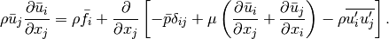
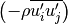

A better understanding of complex events involving waves and wind interacting with fixed and moving solids, such as vessels, navigation structures, and levees, is critical for making sound engineering decisions in Corps of Engineers projects. Computer simulation of these events is challenging due to the multiple physical processes that must be simulated (three-dimensional laminar and turbulent incompressible flow, moving boundaries, solid mechanics) and the multiple scales that must be resolved (centimeters for the resolution of some hull features to hundreds of meters of channel reach).
Waves interacting with coastal and navigation structures usually result in free surface flows that are highly non-hydrostatic (fully three-dimensional) and turbulent. Furthermore, the free surface typically undergoes extreme deformations and even changes in connectivity during wave breaking and overtopping of structures. Similarly, vessels traveling in shallow water or at high speeds often generate and interact with non-hydrostatic breaking waves and wind. As design and evaluation of coastal and navigation structures are primary components of the Corp of Engineers’ mission, understanding and predicting these phenomena are of critical importance.
Most of the processes involved in non-hydrostatic, free surface flows are at least formally described by partial differential equations of continuum mechanics. The full set of equations for either the single or two-phase (air/ water) free boundary problem is not amenable to analytical solution techniques except in very simple cases. On the other hand, solving the equations in realistic coastal and navigation applications is challenging for standard numerical approximation methods for many reasons, including
The objective of this draft-report is to present the operational utility of the Protues-MPRANS Wavetank case, along with insight into formulation of the basic problem, installation, running and capabilities of the numerical wavetank.
Wavetank is a test case package for modeling 3-dimensional full fidelity flow in wave basin environment. The benchmark case is implemented in PROTEUS MPRANS (Multi-Phase Reynolds Averages Navier-Stokes) framework. It is based on two-phase flow (air and water) in a rectangular prism domain.
The Reynolds-averaged Navier–Stokes equations (or RANS equations) are time-averaged equations of motion for fluid flow. The idea behind the equations is Reynolds decomposition, whereby an instantaneous quantity is decomposed into its time-averaged and fluctuating quantities, an idea first proposed by Osborne Reynolds (1895). The RANS equations are primarily used to describe turbulent flows. These equations can be used with approximations based on knowledge of the properties of flow turbulence to give approximate time-averaged solutions to the Navier–Stokes equations. For a stationary, incompressible Newtonian fluid, these equations can be written in Einstein notation as:

The left hand side of this equation represents the change in mean momentum of fluid element owing to the unsteadiness in the mean flow and the convection by the mean flow. This change is balanced by the mean body force, the isotropic stress owing to the mean pressure field, the viscous stresses, and apparent stress  owing to the fluctuating velocity field, generally referred to as the Reynolds stress. This nonlinear Reynolds stress term requires additional modeling to close the RANS equation for solving, and has led to the creation of many different turbulence models. The time-average operator is a Reynolds operator.
Note
The original PROTEUS-MPRANS package was written in part by Chris Kees, Mattew Farthing and additional wave module boundary inputs have been implemented by Matt Malej.
The primary difficulty of free surface flows over wall-bounded flows is that the configuration of the air/water boundary surface becomes an additional aspect of the solution that must be approximated numerically. Since our goal from the outset was to deal with extreme phenomena in the sense that large deformations of the free surface and changes in connectivity (topology) of the water flow domain would occur, we sought methods that behave well in this regime. In particular, we adopted a hybrid level set/volume-of-fluid approach that combines the accuracy and conceptual simplicity of front-tracking using level set methods with the conservation properties of volume-of-fluid methods. This hybrid method is a state of-the-art “Eulerian” technique for free surface modeling in the sense that free surface is not represented directly by the spatial discretization. While we have explored adaption and refinement in both space (h-adaption) and polynomial order (p-adaption), obtaining high accuracy at an acceptable computational cost while retaining robustness will likely continue to be an area of research for several of the equations that make up the approach, including Navier-Stokes type equations, transport equations, and the Eikonal (or redistancing) equation.
Much of the pioneering work on free surface flows was carried out using finite volume or finite difference discretizations, and at present the bulk of research in this area involves finite volume methods. A finite element approach is at the heart of the Protues computational framework, that is capable of exploiting some of the strengths of finite element methods. In particular, the ability to maintain optimal convergence rates on unstructured meshes and the natural and firm theoretical basis for higher-order and adaptive methods, is of direct importnce.
The prototype, named Proteus, has evolved into a stand-alone, parallel, adaptive finite element code consisting of roughly 130,000 lines of mixed language Python/C/C++/Fortran code and inline documentation (not including external open source libraries dependencies).
For now, PROTUES-MPRANS is only available to developers as source from our git repository (Git Repository Access). It must be built on top of PROTUES computational framework toolkit, because we haven’t had the resources to devote to producing regular binary releases. On many platforms we have had to build the Python interpreter and all the external dependencies. To make our lives easier, the git repository has submodules for the source code of essentially everthing except the C, C++, and Fortran compilers. The result is a portable but nevertheless somewhat of a long and complicated compilation process.
The source code is available on github at: https://github.com/erdc-cm/proteus-mprans See http://help.github.com for help on using git and github.
If you have setup Git on your system and have been granted acces to PROTEUS-MPRANS repository, do the following:
%cd $HOME
%git clone git@github.com:erdc-cm/proteus-mprans.git
That will create proteus-mprans directory on in your home directory.
Note that before you can build Proteus-MPRANS you must have a workinng version of Proteus. Build instructions for Proteus are available on our wiki https://github.com/erdc-cm/proteus/wiki, and you can ask for help on the developers’ mailing list http://groups.google.com/group/proteus-dev/subscribe.
Make sure you install the base proteusModule and set the related enviroment setttings. Then set the following environment variables and type make install in the root directory.
For easy pre/postprocessing and general convenience, set the following enviroment variables (in Bash):
%export PROTEUS_MPRANS = $HOME/proteus-mprans #or wherever you installed Proteus-MPRANS
%export PATH = $PATH:$PROTEUS_MPRANS/scripts
If you have successfully compiled Proteus-MPRANS then you should be able to run it in serial:
%cd $PROTEUS_MPRANS/benchmarks/wavetank_reflecing
%parun wavetank_so.py -l 3 -v -D test_serial_wavetank
The solution of the serial run will be saved in a file ending in .xmf, which can be opened with ParaView or Ensight.
For parallel runs, you would do the following:
%cd $PROTEUS_MPRANS/benchmarks/wavetank_reflecing
%mpirun -n #NP parun wavetank_so.py -l 3 -v -O petsc.options -D test_parallel_wavetank
where #NP stands for the number of processors. Again, the solution of a parallel run will be saved in files ending in .xmf. However, they will be numbered to reflect the number of processors #NP used in the simulation (eg. wavetank0.xmf, wavetank1.xmf, ... , wavetank#NP-1.xmf).
A master xmf file will have to be generated by gathering all separate (process generated) xmf files. This can be accomplished by running the following command in the directory containing the xmf/h5 solution files:
%PROTEUS/proteusModule/scripts/gatherArchives.py -s #NP -f wavetank
where #NP is again the number of processors used.
When running on a single processor/core (in serial) you will have to set the following option in the wavetank.py module:
useSuperlu = False
Otherwise if you are running in parallel, you will have to set useSuperlu to False and then provide a petsc.options file
The geometry and mesh selection (along with other inputs) is all set in the wavetank.py module. The 3D tank size is provided by a tuple L = (X, Y, Z), where the mean water depth is automatically set to half of the vertical dimension of the wavetank Y/2. A wave damping sponge layer (wave absorbing beach) is imposed by setting spongeLayer = True. A flag for allowing waves to rebound off the right end of the tank is given by rightEndClosed = True.
To specify the mesh you have to set useHex flag to either True/False, that will set it to use hexagon or tetrahedral meshes, resepectively.
In addition, inside the wavetank.py module you can specify several numerical and physical parameters, such as for example
To specify the wave input at the wave maker (left end of the tank) you need to set the waveField object to one of the following
and all of these wavemaker functions require the following parameters to be passed in
Note
NEED TO add sub-section on setting up:
* serial vs. parallel runs
* specifying PETSc option
* setting up tank geometries
The source code, wiki, and issue tracker are on github at https://github.come/erdc-cm/proteus-mprans. The developers’ mailing list is http://groups.google.com/group/proteus-dev. Both require approval at this time.